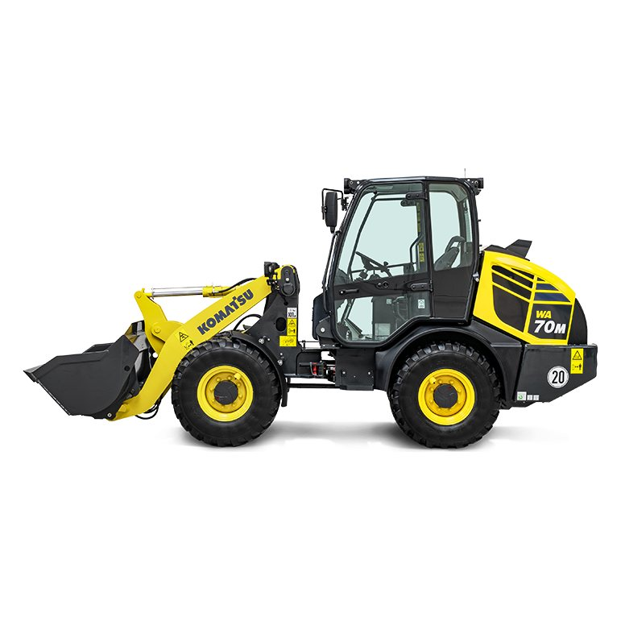
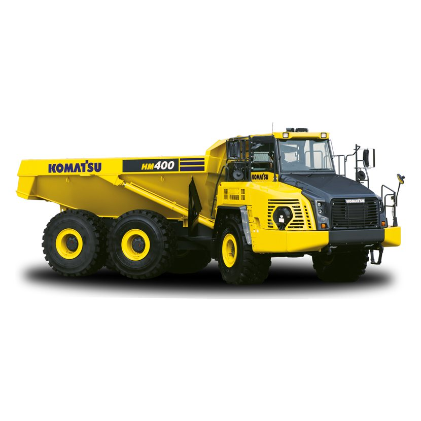
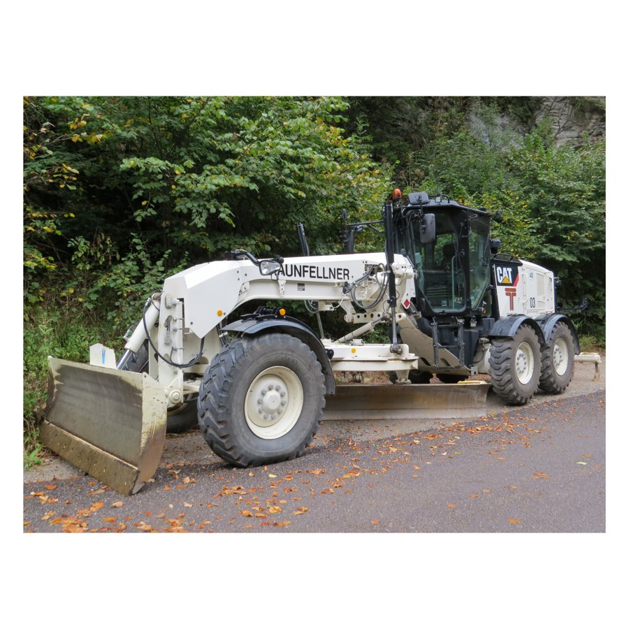
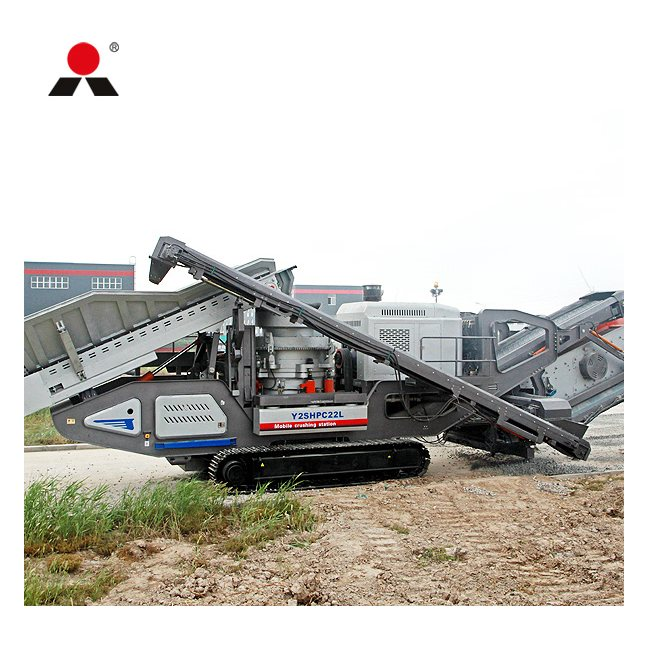
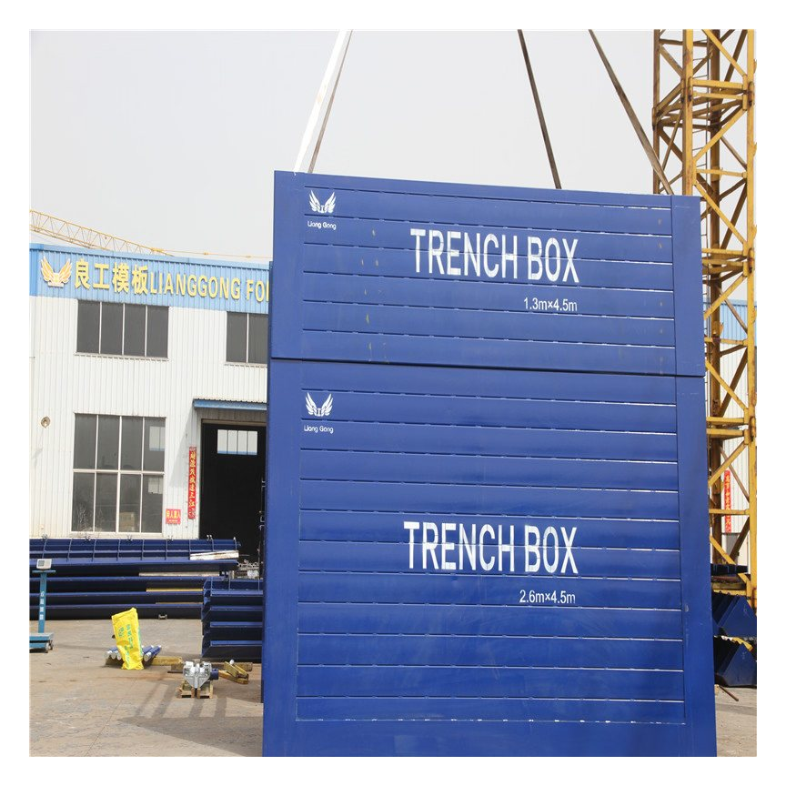
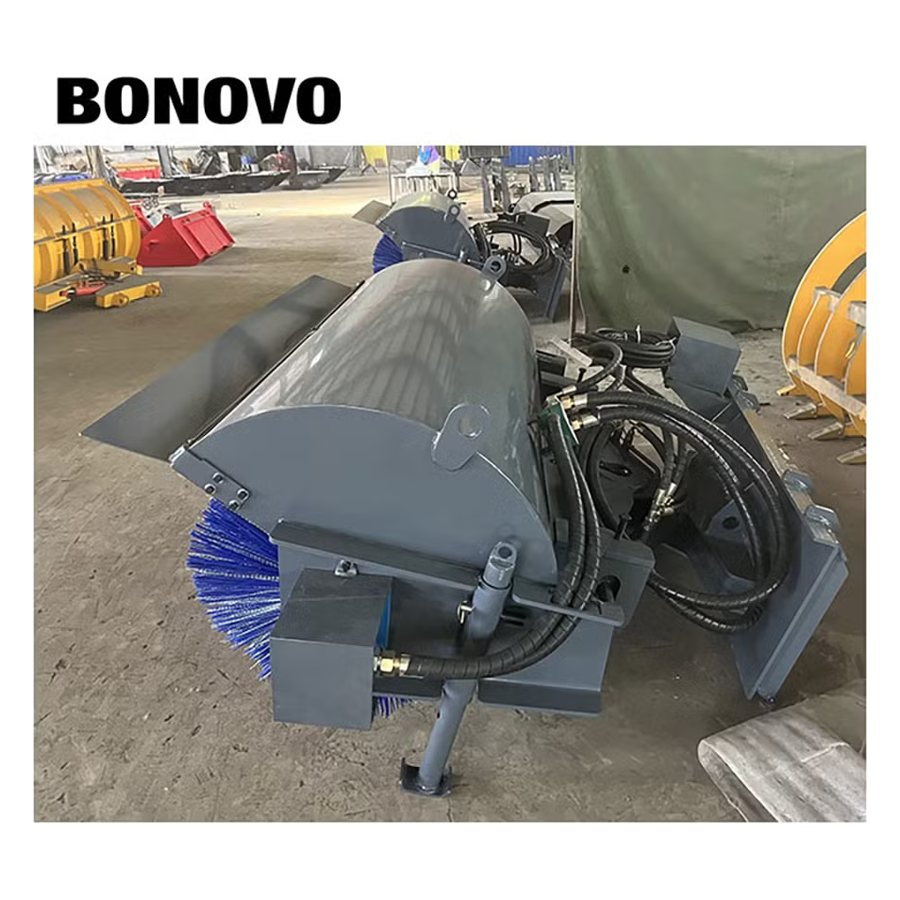
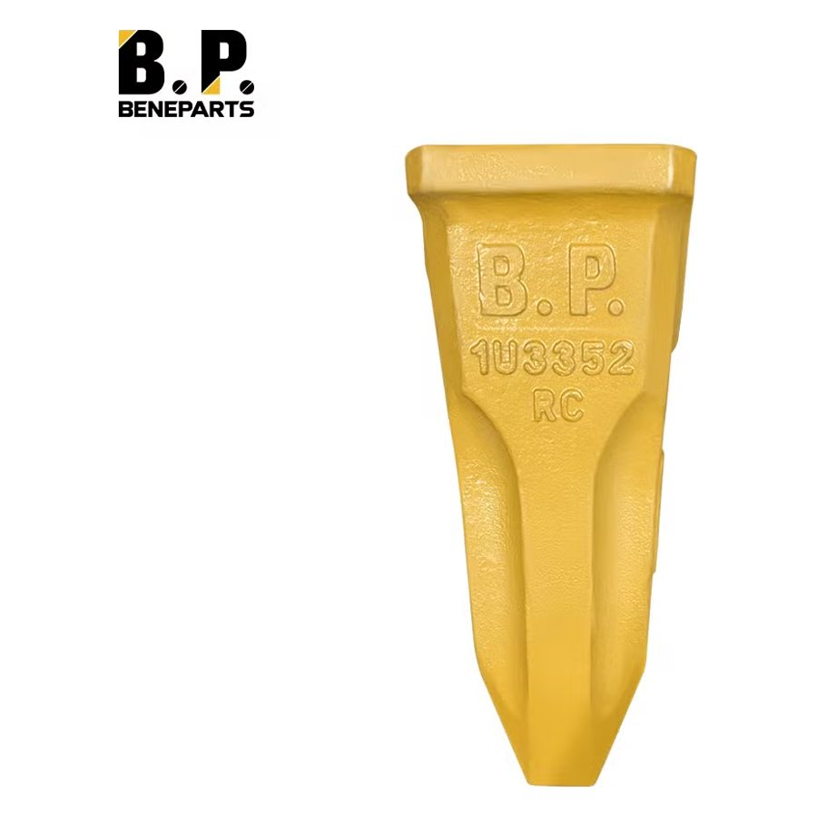
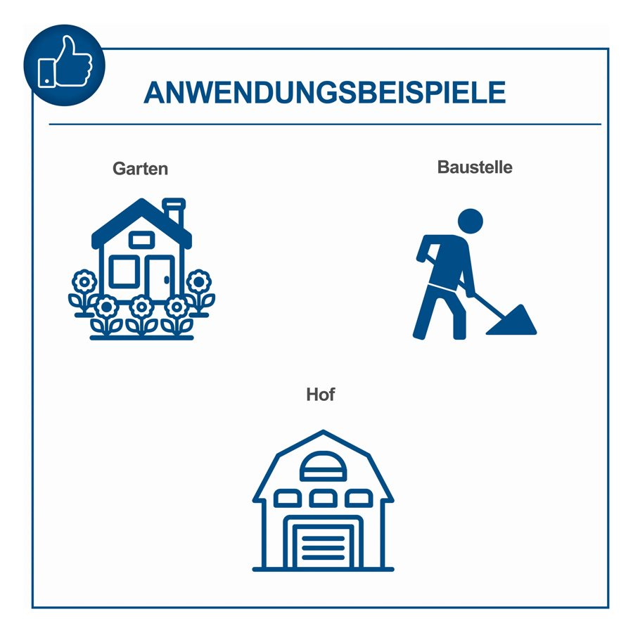

Home / Construction machinery / Electric tracked dumper 500 kg (battery)

Illustration similar – shows the product type.
Construction machinery
Electric tracked dumper 500 kg (battery)
Low-emission battery tracked dumper for rubble and material transport inside buildings and on soft ground.
The battery tracked dumper carries rubble, screed, concrete and material up to about 500 kg over ramps, courtyard access and soft ground without releasing exhaust fumes indoors. The tracked undercarriage provides traction, the tipping skip empties hydraulically or manually, and the quiet, low-emission electric drive is a clear advantage in refurbishment of occupied buildings.
Technical data
| Payload | approx.; 500 kg |
|---|---|
| Drive | Battery-electric drive (lithium-ion) |
| Undercarriage | Tracked undercarriage |
| Skip | tipping (hydraulic or manual), approx.; 0.25–0.35 m³ (typical) |
| Travel speed | approx.; 3–5 km/h (typical) |
| Width | approx.; 700–800 mm (fits through doorways, typical) |
| Safety | Emergency stop, dead man's switch |
| Customs tariff number (HS) | 87041090 |
EU standards and regulations
2006/42/EC; (EU) 2023/1230Machinery Directive (CE marking); Machinery Regulation (EU) 2023/1230 from 20 Jan 20272014/30/EUEMC Directive (electromagnetic compatibility)UN 38.3Lithium battery transport tests (UN Manual of Tests and Criteria)EN 62619Safety requirements for lithium cells and batteries for industrial applications(EU) 2023/1542EU Battery Regulation (labelling, safety, sustainability)EN ISO 13850Safety of machinery – Emergency stop function
More products in this category

Skid-steer loader (compact, approx. 1 t class)Manoeuvrable skid-steer loader for material handling, clean-up and attachments on confined sites.

Compact wheel loader (articulated), approx. 1.5 t, dieselArticulated compact wheel loader for rubble loading, material transport and container filling on demolition sites.

Large wheel loader (articulated, approx. 18 t, diesel)Large 18 t class wheel loader with a bucket of about 3 m³ for earthworks, bulk material and recycling yards.

Mini excavator 1.8 t (tracked, diesel)Compact 1.8 t tracked mini excavator for tight strip-out and demolition sites.

Crawler excavator approx. 6 t class, dieselVersatile 6 t class crawler excavator for demolition, earthworks and excavation on mid-size sites.

Crawler excavator approx. 20 t (diesel)20 t class crawler excavator for building pits, pipe trenches and bulk excavation in civil engineering.

Articulated dump truck for heavy earthworks (ADT)Articulated dump truck of the 30–45 t class for bulk haulage off-road and on site roads.

Excavator attachments: buckets and quick couplersBuckets and quick couplers for excavators from mini excavators to the 20 t class, mechanical or hydraulic.

Hydraulic breaker (demolition hammer) for 3–8 t excavatorsExcavator-mounted demolition hammer for breaking concrete, masonry and screed in demolition and strip-out.

Rubber tracks for mini excavators, size 230 × 96 × 33Endless rubber track for mini excavators in the common size 230 × 96 × 33 mm, replacing the worn original track.

Hydraulic excavator thumb (grab thumb) for mini excavators 1–3 tHydraulically operated thumb on the stick that turns the bucket into a grab for timber, pipes and stones.

Hydraulic earth auger drive for mini excavators 1.5–3 t (bits Ø 100–300 mm selectable)Hydraulic auger drive with planetary gearbox that drills post, planting and foundation holes from the stick of a mini excavator.

Pallet fork with Euro hitch for compact loaders and farm loadersPallet fork with Euro quick-hitch frame that turns a loader into a pallet handler.

Crawler bulldozer approx. 17 t

Motor grader approx. 15 tSelf-propelled 15 t-class grader with 3.66 m blade for subgrade work, road maintenance and road building.

Backhoe loader approx. 8 t4WD 8-tonne-class backhoe loader with 1.0 m³ loader bucket and rear backhoe for municipal and civil works.

Tandem asphalt roller approx. 3 tSelf-propelled 3-tonne-class vibratory tandem roller for asphalt, footpaths and cycle paths, car parks and repairs.

Asphalt paver, paving width approx. 2.5–6 mCrawler paver with hydraulically telescopic, electrically heated screed for paving widths of 2.5 to 6 m.

Telehandler approx. 4 t / 14 m, diesel

Truck crane 25 t, 3-axle

Tower crane (flat-top) approx. 6–8 t

Rotary drilling rig for bored piles, approx. 160 kN·m

Mobile tracked jaw crusher for C&D recycling

Mobile tracked screening plant 200–600 t/hMobile screening plant with an 8.1 m³ hopper, a 1,800 × 4,500 mm screen box and 200–600 t/h throughput.

Wheeled site dumper 1 t, diesel, 4x4Compact diesel dumper with hydraulic tipping skip for landscaping and site work.

Vibratory plate 90 kg, petrol, forwardPetrol vibratory plate for paving, gravel and asphalt repair.

Steel trench shoring box for pipe and utility trenchesSteel shoring box that protects workers in pipe trenches.

Angle broom attachment for skid-steer loadersHydraulic angle broom for skid-steer loaders.

Excavator bucket teeth for mini excavatorsWear teeth for mini excavator buckets.

Petrol vibratory tamping rammer for trenchesPetrol rammer for trenches and foundations.

Snow blade for skid-steer and front loadersSteel snow blade for winter service on loaders.

Hydraulic brush cutter/mulcher head for excavatorsHydraulic mulcher head for excavator land clearing.